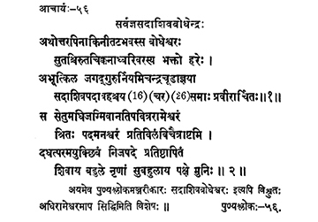

56. आचार्य - 56 - सर्वज्ञसदाशिवबोधेन्द्रः
अथोत्तर ••• प्रवीरार्चितः ॥ ११० ॥
स सेतु ••• मुनिः ॥ १११ ॥
अयमेव ••• विशेषः ॥
Then, the son of Cirutacikkadādhvari on the banks of river Uttarapinākinī, a devotee of Hari, the preceptor Bodheśvara, bearing the appellation Sadāśiva under the directions of preceptor Candracūḍa, was Jagadguru for sixteen years adored by the King Pravīra Sethupati.
The preceptor visited the sacred Sethu Rāmeśvara, having worshipped Lord Śiva for the welfare of the mankind reached eternal abode on Caitra Śukla Aṣṭamī in the year Vilambi.
This preceptor is well-known as Sadāśiva Bodheśvara, author of Puṇyaślokamañjarī and attained siddhi in Rāmeśvaram.
